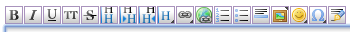

User Tools
- Logged in as: Will Pimblett (will)
- Admin
- Update Profile
- Logout
Sidebar
wiki:help
How This Wiki Works
This is a private wiki for use by New Theatre members. It operates very much like other popular wiki's such as Wikipedia, where everyone can create and edit pages. The idea being we can collaborate knowledge of tech/workshop equipment in a centralised manner. It can be also used for notices/announcements, for example a show could post rehearsal times/what set they need etc. so everyone stays informed.
Created at the very end of the summer 2012 season, this resource is very much in it's infancy - so if you know stuff, share it! NB. You need to create an account to contribute.
The syntax and pagenames do look complicated at first, but they're very simple.
How To Edit
If you're on a page and want to edit press the 'Edit this page' link up in the top right. You need to be logged in.
How Stuff's Organised
The wiki is made up of many pages which are organised into namespaces. Namespaces are kinda like folders, for example all the general tech stuff is under the tech namespace, whereas all the lighting stuff is in the lx namespace.
A pages name is in the format namespace:pagename, for example this page is wiki:help, it's the help page under the wiki namespace.
You can have two levels of namespaces (eg shows:charley's aunt:rehersals). This is really only needed for things like shows so that it doesn't get messy.
Very Basic Syntax
The way you edit pages isn't really like a word processor. This would get very messy and would lock us in to the software. Using wiki syntax we can keep everything light, and our data able to be exported easily. Big page on syntax here.
They's also a row of buttons to help you when writing:

Basic syntax includes
Paragraphs
Paragraphs are separated by an empty line.
Hello I'm a paragraph. And I'm another
If there's no empty line the two lines are joined together.
Headers
Always work from biggest to smallest.
====== Biggest Header ====== ===== Second biggest ===== ==== third ==== === fourth === == fifth == that it
Links
This is a link for the [[beans]] page in the current namespace. This is a link for foogle.com. External links are detected automatically. This is a link to the [[tech:start]] page, the homepage for tech.
You can create links for pages that don't exist yet, they'll show up in red. You can then click on them to create the new page.
Formatting
This is **Bold Text**, this is //Italic Text//, this is __Underlined Text__. * Bullet List Item * Bullet List Item * Bullet List Item - Numbered List Item - Numbered List Item - Numbered List Item (Note the two spaces before the asterisk and dash)
If you use the buttons above the editor you don't have to remember exactly how each type bullet point/header etc is made.
Creating Pages
Either create a link to the page you want to create on another (eg the start page of a namespace), or search for the pagename (eg tech:turnips) and then in both cases click 'Create this page' and start writing.
One Last Thing
Don't worry about breaking things, it's more useful if things are a bit messy but have good information than if they're left alone! If things do go badly wrong, everything can be undone, the site has infinite copies of old pages.
wiki/help.txt · Last modified: 2019/05/22 01:02 by Sam Osborne